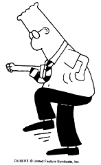

 We've all worked in offices like Dilbert's. Clueless bosses, obnoxious co-workers, dense managers, insipid menial tasks and pointless reports abound. In three small squares a day, cartoonist Scott Adams has managed to capture the drudgeries of the American work place with amazing bite and wit. But as funny as Dilbert is, a daily comic strip has its limitations; little snippets may amuse, but the reader never really becomes as fully involved in the life of the characters as the artist wants. You read Dilbert, then move on to the Jumble.
The Dilbert Zone, however, turns the comic into a cottage industry. There's a lot of potential in workplace empathy, and Scott Adams has turned his Web site (http://www.unitedmedia.com/comics/dilbert/) into the core of a fan club bordering on a cult. Unlike many cartoonists, Adams actually wants to know his fans, to the extent that he gives them titles (when they ask), publishes a newsletter and answers all his own e-mail. Internet Underground caught up with Adams in his home in California, where he now spends most of his day, to discuss working at home, rampaging 'net egos, flunkies, e-mail and sock puppets.
INTERNET UNDERGROUND:
I know you used to work for Pacific Bell, but now you're out on your
own. What's it like not having a day job?
SCOTT ADAMS:
Much better. I'm actually working harder now than I did when I was there. It was
always nice to have that eight hours a day when you knew you didn't have to do much heavy thinking,
but now everything I do is kind of meaningful, and there's a lot of it.
IU:
What did you do for Pacific Bell?
SA:
I worked in the ISDN laboratory. I
wasn't as technical as my co-workers -- I was pretty much bluffing my way through the day. It turned out
to be a nice way to spend a few hours thinking about something other than cartooning.
IU:
How long did you work there?
SA:
About nine years. I was with the company in a variety of different jobs.
IU:
Dilbert's been around for a while -- why did you decide to stick with the day job for so long?
SA:
For a number of reasons. For the first few years, I wasn't in enough newspapers to really leave the
day job and be as comfortable as I wanted to be. More recently, it's been financially possible, but I stayed
around for the last year or two because there's a lot less mental anxiety when you know you don't have to
be there and I liked being around the technology. Basically, it wasn't painful.
IU:
Didn't everyone at work expect you to be leaving? Was there a level of inevitability to it?
SA:
I think everybody expected that I would leave if the cartoon became more successful. It certainly
wasn't inevitable that it would be successful.

IU:
I noticed that a lot of the strips center around the workplace. Do you worry about running out of fuel
now that you're not in the workforce any longer?
SA:
Actually, I have the same fuel that I had when I was there. For the last couple of years that I worked
there, most of my ideas had been coming to me through e-mail anyway. That's still true. I get anywhere
from 200 to 800 messages a day. Three hundred so far today, and many of them are suggestions for the
strip.
IU:
How so? People sending in anecdotes?
SA:
Anecdotes, and pet peeves, and ÎWhy don't you make fun of this,' and ÎCan you believe we're doing
that' kind of thing.
IU:
Do you think the focus of the strip will shift as your life becomes drastically different?
SA: I tend to think that things like this are better if they're a bit dynamic, and so, absolutely, something will change. But I don't have anything planned, and I don't think that it will be as simple as starting to mirror my life, or being more related to working at home. It'll change, but I don't know how.
IU:
One thing I've always wondered about the strip -- didn't the people at work kind of assume that you
were drawing them? Did you ever get accused of taking on co-workers, and bosses, and so forth?
SA:
There is at least one character pretty directly related to a co-worker -- the Alice character, the female
engineer -- she's kind of modeled after a co-worker of mine at Pacific Bell. The other characters are
composites, for the most part. Every once in a while I'll throw in a specific character if there's a specific
event that just begs for it, but typically not.
IU:
What do you do all day now that you're not at work?
SA:
Interviews are a big part of it. Photo shoots, speaking engagements, various requests for my time to
appear, sign books, travel, promote things. We've got a fairly booming licensing business, so there's
fairly extensive time requirements for things like designing greeting cards, T-shirts, mugs and mouse pads.
I'm also doing some writing -- I've got a new book coming out in June, called The Dilbert Principle, so
that's in addition to the cartoon.
IU:
Is that book pure writing?
SA:
It's gonna be about half pure text on various business topics, but it'll be punctuated with cartoons.
IU:
You still getting up at 5 a.m.?
SA:
Actually, I've allowed myself the luxury of sleeping until six now. When you have a 30-second
commute, it's kind of good and bad; the good is that you don't have a commute, the bad is that you're
working all the time. Sometimes it's nice to sit in the car and listen to the radio and know that you
couldn't work even if you wanted to.
IU:
Do you have some kind of escape to get away from the cartoon?
SA:
I try to incorporate my entertainment into my life, and I lead a pretty balanced life. I always break for
lunch or breakfast, I always break for dinner, and I make sure that I hit the gym three or four times a
week. When you called, I was playing music and scanning strips. I take lots of breaks to pet my cat. It's
the kind of life where there's a lot of it, but not very much of it is unpleasant. I can't say that I feel any
stress or burnout or any of those things.
IU:
I noticed, going through the photo tour of your home on the Web site, that you have several cats.
Why isn't there a Catbert?
SA:
I have two cats, but there is a Catbert. He appears not as often as the other characters, but he's the
human resources director at Dilbert's company. A cat's kind of the perfect choice, because he doesn't care
if you live or die, and he doesn't mind playing with you before he downsizes you.
IU:
Dogbert seems to get a little more prominence.
SA: Yes, he does -- it would have been bad form for me to do too much with the cat, because Garfield was part of the same syndicate, at least until he left and bought his rights back from United Media. It was kind of an unwritten, unspoken professional courtesy.
IU:
But you guys don't exactly have similar senses of humor.
SA:
No, but I think the world only needs so many cat jokes. I don't mind adding to the pile, but you
wouldn't want to be excessive about it.
IU:
How long have you been online?
SA:
I've been running my
e-mail address since early 1993, so that appears in the strip every day. The cartoon itself has been on the
Web since April, so less than a year, and it was on America Online for a couple years before that. Older
strips were on AOL, and still are. The Web runs a week behind the newspaper.
IU:
There's really a fair amount of content in the Dilbert Zone. Do you put much effort into it, or do
they just come to you and ask for content? Who really runs it?
SA:
All of the content that you see in there that's either about me or about the cartoon itself obviously
came from me, and the commercial stuff -- the Dilbert Store, for example --
is done by United Media.
My involvement is with the creative part.
IU:
You call your site "the most self-indulgent, egotistical thing I have ever done in my life."
SA:
So far.
IU:
Do you think that the Internet is pretty self-indulgent and egotistical?
SA:
I do, and I'm all for that. I'm not one to say that being egotistical is a bad thing, if you're doing it
with humor.
IU:
Have you had a chance to look around much on the 'net? Found much egotism?
SA:
I do a lot of looking around, actually. I've been surfing around over the holidays, when the Web's a
little less busy, which is nice. I guess the only ego stuff I get is through e-mail directly, when people write
to correct my grammar, or point out the many ways in which I could have written this sentence even
funnier if only I were as smart as they are.
IU:
You have an awful lot of e-mail to sift through. Do you really read it all or do you get to the point
where your eyes glaze over?
SA:
I open them all, and I look at them all -- some require a more careful reading than others, as you
might imagine. You can fairly easily get the idea of what they're writing about at first glance. I reply to as
many as I can, but I can't reply to them all, of course.
IU:
That must take up a large chunk of time.
SA:
It's about four hours a day, just on e-mail.
IU:
Do people really expect that you're going to write them back? Do they think that they're really
writing to you, or to someone else at United Media?
SA:
It's across the board. Some number of people write me long letters telling me about their life, and
what they did today, and they get really offended if I just thank them for their letter and say, ÎGlad you
like the strip,' or something. They write back with sarcastic comments about how I couldn't take the time
to write them. Another common request -- people write to me and ask me to write a greeting to a friend
of theirs, because it's their birthday, or they're leaving, and essentially they try to use me as a greeting
card service, and save a buck. I don't appreciate those too much.
But then there's a whole other group of people who are convinced that I couldn't possibly be reading my own e-mail, so they start out with "To Scott Adams, or whatever flunky is reading his e-mail now, please pass this on to Mr. Adams, if you can."
IU:
Like you have a whole bank of flunkies working for you?
SA:
Yeah. It's just me and the cat, and the cat doesn't help too much.
IU:
The photo tour on your site is pretty extensive, and it felt kind of personal, since you actually see
your home, but then there's the commercial aspect of the Dilbert Zone, with advertising on the pages. I
found this to be kind of an interesting dichotomy -- do you ever come down on whether the site should be
more personal or more of a business move?
SA:
Well, it's all business. It's certainly unequivocally commercial, and I would never want to make any
kind of noise that would contradict that. I don't think there's anything intrinsically incompatible with
having fun, or being personal, or being human, and being a capitalist at the same time.
IU:
Where did the whole sock puppet thing come from?
SA:
(Laughs) I was asked to write a little introduction to the Web site when it was first going to start, and
I kind of had writer's block, so I thought, ÎI don't know, why don't I say something about putting a sock
on your hand and talking to the terminal.' I can't tell you that there was any specific chain of events that
caused me to think that -- it probably has something to do with a head injury when I was a child.
I put it on there as a lark, and we started getting dozens of photos of people with their sock puppets, and they were actually much funnier than I would have imagined they could have been, because people added little commentary about their sock puppet, and how they made it. As time allows, it's a little bit of a resource drain, we're adding them to the site.
IU:
That's a prime example of people on the Web latching onto an offhand thing and really running with
it.
SA:
I've found that people like to belong. They like attention. You probably know about my online
newsletter, the DNRC (Dogbert's New Ruling Class) -- the number of people who write to me and claim
their DNRC title, such as the person who wanted to be "The Minister of Sitting on the Toilet Until His
Legs Fall Asleep," or "The Minister of All Stuff Found on Computers" -- they're all rather happily
claiming their titles, and putting them on business cards, or putting them in their sig files in their e-mail.
It's a funny thing. If they like it, I like it.
IU:
How do you feel this site, and your presence on the Web, play in with the cartoon itself and your
efforts to expand it further?
SA:
Actually, we're working now on a way to augment the DNRC area of the Web, which doesn't exist
yet, so first it will exist, and them it will be augmented. You'll have to know the secret password to get in
there, but we're going to make it so that it won't be too tough to guess. I can't tell you the secret content
that'll be there, but it will be text, graphics, and it will be fun, and people will definitely talk about it. I
kind of view the whole thing as an interactive experiment, and I don't mean just the Web, but the comic
in general. My goal with all of this is, whatever I do, whether it's on the Web or elsewhere, I ask myself
the question ÎWill this make somebody do something?' I want them to either cut out the cartoon, or send
an e-mail, or get mad, or make a comment, or claim a title, or send me a sock puppet -- I want them to do
something. And that really makes it kind of an experience for them, as well as for everybody else.
We're trying to go to the next level, trying to bring people into it and make it a little bit more special than just something you look at and then you're on to the next thing.
IU:
It seems like you've expanded a lot further than just the typical three-block comic format.
SA:
That's right. I'm trying to get off the page as much as possible.